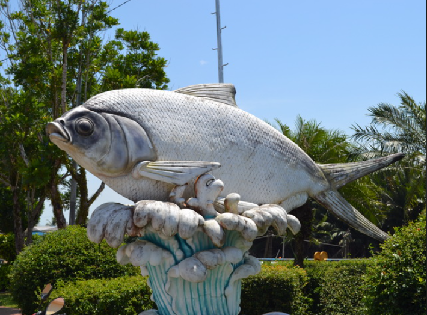

SARWAK MAP: BAHAGIAN MUKAH
Daro District is located in central Sarawak and was previously known as the Matu-Daro District. It became a separate district on May 5, 1991, when Matu was declared its own district. The name "Daro" comes from "DARUK," meaning a watery or swampy area, reflecting the flat, marshy landscape of the region. After Mukah was declared the tenth division of Sarawak, the administrative boundaries of Daro District changed. Daro District includes the small district of Belawai and parts of Sibu, Meradong, and Sarikei Districts. The total area of Daro District is 1,956.27 square kilometers, with Belawai covering 730.53 square kilometers. The primary mode of transportation is by water, as over 80% of Daro is accessible this way. However, road networks have developed, and ferry services between Pulau Bruit and Daro Town facilitate daily activities and access to larger towns like Sibu.
At the Daro jetty, a replica of the terubuk fish symbolizes the popular fish in Daro. For your information, the terubuk fish, also known as toli shad or Chinese herring (Tenualosa toli), is a species from the Clupeidae family. It is widespread in the western Indian Ocean and the Bay of Bengal to the Java Sea and the South China Sea. It can also be found in Mauritius and the Mekong in Cambodia near the Vietnam border. This fish inhabits turbid, fast-flowing estuaries and adjacent coastal waters. Known as T. toli, it is highly regarded among Malaysians for its flesh and roe. Overfishing has reduced its population to alarming levels in Southeast Asia, with the coasts of Sarawak being its last remaining habitat. In Bangladesh, where it is known as Ilisha Chandana, it is commercially less important compared to T. ilisha. It is called Daungdana in Myanmar, Trey Palung in Cambodia, Bhing in Maharashtra, Palwa in Gujarat, and Seriya in Sri Lanka.
(Turn on the internet to see the map)